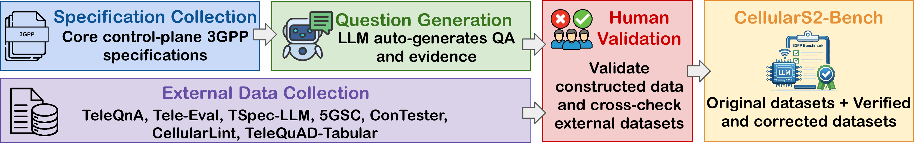

CellularS2-Bench
A Staged, Evidence-Grounded Benchmark for Cellular Network Security Reasoning
NeurIPS 2026 · Evaluations and Datasets Track
Overview
A benchmark for cellular security reasoning
CellularS2-Bench measures whether models can interpret 3GPP requirements, support answers with traceable evidence, and combine protocol behavior across clauses to reason about security. Its three stages progress from focused comprehension to end-to-end security analysis.
The source corpus spans 1,866 paragraphs, 22,033 sentences, 424 figures, and 248 tables across the three specifications.
Benchmark
CellularS2-Bench
STAGE 015,500 instances
Intra-Clause Specification Comprehension
The correct answer can be found within a single specification clause (including all multimodal contexts).
STAGE 025,000 instances
Evidence-Grounded Answering
Each prediction must be both correct and traceable to the authoritative specification source.
STAGE 033,351 instances
Cross-Clause and Security-Aware Reasoning
Integrate information across multiple specification clauses and perform security-aware interpretation.

Benchmark Composition
Statistics & Quality Overview
Every instance is constructed or verified by one annotator and independently reviewed by two auditors. An instance is accepted only when both auditors pass it. External tasks are checked for answer correctness and evidence traceability; unsuitable or ungrounded items are excluded.
97.6–99.9%observed acceptance rates across original task sets
0.64–0.80Cohen’s κ range for inter-annotator agreement
13,851 INSTANCES100%
10,269 newly constructed 74.14%
3,582 verified & corrected 25.86%
Newly constructed datasets 10,269
Stage 1 · 1,500 EQA + 1,500 AQA + 1,500 MCQA4,500
Stage 2 · 1,500 EQA-E + 1,500 AQA-E + 1,500 MCQA-E4,500
Stage 3 · 222 CCQA + 747 TFQA + 150 vulnerability labels + 150 evidence & explanation1,269
External verified / corrected datasets 3,582
TeleQnA500
Tele-Eval500
TSpec-LLM500
5GSC1,454
ConTester320
CellularLint55
TeleQuAD-Tabular253
Examples
What does a benchmark instance look like?
QUESTION
What specific procedural outcome triggers a transition to the EMM-REGISTERED.ATTEMPTING-TO-UPDATE-MM state?
ANSWER
The successful completion of a combined attach procedure or a combined tracking area updating procedure, but where success is achieved solely for EPS services.
EVIDENCE
TS 24.301, Clause 5.1.3.2.4.8
QUESTION
In WB-S1 mode, if the GUTI REALLOCATION COMMAND includes a UE radio capability ID deletion indication IE set to “Network-assigned UE radio capability IDs deletion requested,” what must the UE do after completing the GUTI reallocation procedure?
CORRECT ANSWER
B · Initiate a tracking area updating procedure
EVIDENCE
TS 24.301, Clause 8.2.27 — Tracking area update complete
INPUT
TS 24.301 allows the UE to accept certain NAS signalling messages without integrity protection before security can be activated.
EXPECTED LABEL
Vulnerable
CATEGORIES
Integrity Bypass · Fake Reject / Unauthorized Deregistration / DoS · Identity Exposure / Privacy Leakage
EVIDENCE
TS 24.301, Clause 4.4.4.2 — Integrity checking of NAS signalling messages in the UE
Baseline Framework
CellularS2-ARI: Adapt, Retrieve, Integrate
A unified baseline for examining how domain adaptation, evidence retrieval, and structured reasoning affect performance on the benchmark.

SpecFusion
Transforms tables and figures into structured JSON descriptions, creating a unified textual interface for heterogeneous specification content in a shared component space.
SpecAnchor
Ranks chunks with a weighted combination of BM25 keyword scores and cosine similarity over TF–IDF vectors projected via truncated SVD. The top-k chunks form the Retrieved Evidence context.
SpecReasoning
Converts SpecAnchor outputs into structured, interlinked representations: a taxonomy-based knowledge graph that models structural and procedural dependencies among 3GPP entities.
Results
CellularS2-Bench Leaderboard
Compare model performance across tasks and system configurations. Overall ranking summarizes all benchmark tasks, while the all-datasets table can be reordered by a selected dataset and metric.
Evaluation setups
What each system adds
The base model, with no added framework components.
Base model + SpecFusion, the specification adaptation step.
Base model + SpecFusion + SpecAnchor for hybrid evidence retrieval.
Base model + SpecFusion + SpecAnchor + SpecReasoning with the taxonomy-based KG.
ALL TASKS
CellularS2-ARI
Overall ranking
| Rank | Model | Overall score | Stage 1 | Stage 2 | Stage 3 |
|---|
ALL BENCHMARK DATASETSCellularS2-Bench · All datasets
6 modelsComplete Results Matrix
Results for all six evaluated models across the benchmark tasks and system configurations.
| Model | Task | Metric | Base | SpecFusion | + SpecAnchor | CellularS2-ARI |
|---|---|---|---|---|---|---|
| Stage 1 · Intra-Clause Specification Comprehension | ||||||
| GPT-5.6 Terra | EQA | Score=2 | 35.73% | 81.13% | 86.60% | 86.60% |
| GPT-5.6 Terra | AQA | Score=2 | 32.00% | 75.47% | 70.60% | 80.00% |
| GPT-5.6 Terra | MCQA | Accuracy | 90.67% | 90.27% | 90.07% | 100.00% |
| Claude Sonnet 5 | EQA | Score=2 | 34.60% | 83.80% | 88.20% | 88.20% |
| Claude Sonnet 5 | AQA | Score=2 | 32.00% | 77.13% | 83.20% | 83.20% |
| Claude Sonnet 5 | MCQA | Accuracy | 88.67% | 88.40% | 88.20% | 88.60% |
| DeepSeek-V3.2-Exp | EQA | Score=2 | 35.87% | 85.80% | 86.25% | 97.73% |
| DeepSeek-V3.2-Exp | AQA | Score=2 | 34.00% | 81.40% | 81.82% | 97.00% |
| DeepSeek-V3.2-Exp | MCQA | Accuracy | 76.00% | 73.40% | 93.38% | 100.00% |
| Qwen3-Plus | EQA | Score=2 | 31.60% | 82.93% | 87.00% | 88.40% |
| Qwen3-Plus | AQA | Score=2 | 30.53% | 87.60% | 88.96% | 89.40% |
| Qwen3-Plus | MCQA | Accuracy | 79.40% | 84.00% | 93.38% | 96.00% |
| Llama4-Scout-17B | EQA | Score=2 | 4.33% | 65.60% | 66.00% | 66.93% |
| Llama4-Scout-17B | AQA | Score=2 | 2.07% | 57.33% | 57.60% | 59.80% |
| Llama4-Scout-17B | MCQA | Accuracy | 78.27% | 78.33% | 78.00% | 78.53% |
| Qwen3-30B | EQA | Score=2 | 31.87% | 73.00% | 76.33% | 76.67% |
| Qwen3-30B | AQA | Score=2 | 22.00% | 63.73% | 63.73% | 66.60% |
| Qwen3-30B | MCQA | Accuracy | 69.87% | 69.87% | 69.20% | 70.13% |
| Stage 1 · Verified and Corrected Tasks | ||||||
| GPT-5.6 Terra | TeleQnA | Accuracy | 95.20% | 94.00% | 96.00% | 96.00% |
| GPT-5.6 Terra | Tele-Eval | Score=2 | 41.20% | 39.60% | 98.00% | 98.00% |
| Claude Sonnet 5 | TeleQnA | Accuracy | 85.20% | 86.40% | 90.40% | 90.40% |
| Claude Sonnet 5 | Tele-Eval | Score=2 | 46.20% | 68.00% | 97.00% | 98.00% |
| DeepSeek-V3.2-Exp | TeleQnA | Accuracy | 90.00% | 94.20% | 94.00% | 96.00% |
| DeepSeek-V3.2-Exp | Tele-Eval | Score=2 | 38.00% | 97.40% | 98.00% | 97.40% |
| Qwen3-Plus | TeleQnA | Accuracy | 23.00% | 85.80% | 86.00% | 96.80% |
| Qwen3-Plus | Tele-Eval | Score=2 | 14.00% | 62.80% | 92.00% | 93.20% |
| Llama4-Scout-17B | TeleQnA | Accuracy | 85.20% | 84.40% | 86.00% | 90.20% |
| Llama4-Scout-17B | Tele-Eval | Score=2 | 17.20% | 65.80% | 60.60% | 76.60% |
| Qwen3-30B | TeleQnA | Accuracy | 88.00% | 92.00% | 92.00% | 94.00% |
| Qwen3-30B | Tele-Eval | Score=2 | 25.20% | 71.80% | 71.40% | 80.00% |
| Stage 2 · Evidence-Grounded Answering | ||||||
| GPT-5.6 Terra | EQA-E | Score=2 / Evidence | 36.60%/0.00% | 87.27%/100.00% | 87.27%/100.00% | 89.47%/99.73% |
| GPT-5.6 Terra | AQA-E | Score=2 / Evidence | 31.80%/0.00% | 79.93%/100.00% | 79.93%/100.00% | 83.87%/100.00% |
| GPT-5.6 Terra | MCQA-E | Accuracy / Evidence | 89.73%/0.00% | 98.33%/100.00% | 98.53%/100.00% | 100.00%/100.00% |
| Claude Sonnet 5 | EQA-E | Score=2 / Evidence | 35.73%/0.00% | 89.33%/99.73% | 86.60%/100.00% | 86.60%/100.00% |
| Claude Sonnet 5 | AQA-E | Score=2 / Evidence | 30.53%/0.00% | 85.33%/100.00% | 83.00%/100.00% | 83.00%/100.00% |
| Claude Sonnet 5 | MCQA-E | Accuracy / Evidence | 88.87%/0.00% | 97.53%/100.00% | 98.33%/100.00% | 100.00%/100.00% |
| DeepSeek-V3.2-Exp | EQA-E | Score=2 / Evidence | 30.00%/0.00% | 90.00%/0.00% | 96.00%/97.00% | 96.80%/96.40% |
| DeepSeek-V3.2-Exp | AQA-E | Score=2 / Evidence | 39.20%/0.00% | 89.61%/0.00% | 96.40%/96.53% | 96.80%/96.40% |
| DeepSeek-V3.2-Exp | MCQA-E | Accuracy / Evidence | 79.40%/0.00% | 94.12%/0.00% | 100.00%/100.00% | 100.00%/100.00% |
| Qwen3-Plus | EQA-E | Score=2 / Evidence | 27.93%/0.00% | 89.38%/0.00% | 91.40%/96.47% | 95.00%/97.00% |
| Qwen3-Plus | AQA-E | Score=2 / Evidence | 25.60%/0.00% | 79.87%/0.00% | 86.47%/94.00% | 93.00%/95.40% |
| Qwen3-Plus | MCQA-E | Accuracy / Evidence | 80.40%/0.00% | 96.32%/0.00% | 98.80%/93.73% | 98.80%/95.00% |
| Llama4-Scout-17B | EQA-E | Score=2 / Evidence | 26.07%/0.00% | 65.00%/0.60% | 75.27%/93.73% | 84.33%/96.47% |
| Llama4-Scout-17B | AQA-E | Score=2 / Evidence | 10.47%/0.00% | 70.00%/1.40% | 72.27%/93.47% | 81.47%/94.00% |
| Llama4-Scout-17B | MCQA-E | Accuracy / Evidence | 76.87%/0.00% | 80.00%/0.00% | 86.87%/93.73% | 89.80%/88.40% |
| Qwen3-30B | EQA-E | Score=2 / Evidence | 23.13%/0.00% | 73.60%/1.47% | 76.47%/93.73% | 83.87%/96.47% |
| Qwen3-30B | AQA-E | Score=2 / Evidence | 19.33%/0.00% | 66.47%/2.67% | 73.53%/93.47% | 82.47%/94.00% |
| Qwen3-30B | MCQA-E | Accuracy / Evidence | 67.60%/0.00% | 92.60%/0.00% | 92.07%/88.40% | 94.20%/93.73% |
| Stage 2 · Verified and Corrected Tasks | ||||||
| GPT-5.6 Terra | TSpec-LLM | Accuracy / Evidence | 83.40%/0.00% | 95.80%/72.20% | 95.80%/72.20% | 96.60%/85.20% |
| Claude Sonnet 5 | TSpec-LLM | Accuracy / Evidence | 80.40%/0.00% | 96.60%/72.20% | 95.40%/85.20% | 95.40%/85.20% |
| DeepSeek-V3.2-Exp | TSpec-LLM | Accuracy / Evidence | 76.00%/0.00% | 78.00%/0.00% | 94.00%/88.00% | 94.00%/92.00% |
| Qwen3-Plus | TSpec-LLM | Accuracy / Evidence | 77.40%/0.00% | 80.00%/36.00% | 95.20%/88.20% | 95.20%/88.20% |
| Llama4-Scout-17B | TSpec-LLM | Accuracy / Evidence | 69.60%/0.00% | 73.60%/0.00% | 89.20%/72.20% | 92.60%/88.20% |
| Qwen3-30B | TSpec-LLM | Accuracy / Evidence | 71.60%/0.00% | 92.40%/0.00% | 90.60%/72.20% | 92.60%/88.20% |
| Stage 3 · Vulnerability/Inconsistency Labeling with Evidence and Explanations | ||||||
| GPT-5.6 Terra | CCQA | Score=2 / Evidence | 21.17%/0.00% | 66.22%/82.88% | 66.22%/82.88% | 71.17%/100.00% |
| GPT-5.6 Terra | TFQA | Score=2 / Evidence | 48.06%/0.00% | 55.42%/0.00% | 55.42%/0.00% | 64.26%/100.00% |
| GPT-5.6 Terra | Vulnerability Labeling | Bin/Micro/Macro | 75.41%/31.30%/11.13% | 78.12%/50.00%/53.01% | 80.00%/70.00%/73.00% | 90.00%/82.88%/88.00% |
| GPT-5.6 Terra | Evidence & Explanations | Correctness | 0.00% | 0.00% | 0.00% | 100.00% |
| Claude Sonnet 5 | CCQA | Score=2 / Evidence | 19.37%/0.00% | 62.61%/80.18% | 67.12%/100.00% | 90.00%/100.00% |
| Claude Sonnet 5 | TFQA | Score=2 / Evidence | 51.54%/0.00% | 57.83%/0.00% | 61.98%/100.00% | 89.02%/100.00% |
| Claude Sonnet 5 | Vulnerability Labeling | Bin/Micro/Macro | 46.55%/16.78%/8.02% | 53.19%/18.03%/5.79% | 84.00%/72.00%/73.00% | 88.52%/81.13%/86.99% |
| Claude Sonnet 5 | Evidence & Explanations | Correctness | 0.00% | 0.00% | 100.00% | 100.00% |
| DeepSeek-V3.2-Exp | CCQA | Score=2 / Evidence | 17.28%/0.00% | 59.07%/0.00% | 61.86%/72.09% | 95.35%/91.16% |
| DeepSeek-V3.2-Exp | TFQA | Score=2 / Evidence | 17.27%/0.00% | 43.11%/41.10% | 54.75%/0.00% | 97.99%/95.45% |
| DeepSeek-V3.2-Exp | Vulnerability Labeling | Bin/Micro/Macro | 80.00%/39.02%/38.81% | 80.00%/33.03%/25.00% | 80.00%/40.00%/39.00% | 93.02%/70.59%/89.35% |
| DeepSeek-V3.2-Exp | Evidence & Explanations | Correctness | 10.00% | 10.00% | 53.33% | 88.00% |
| Qwen3-Plus | CCQA | Score=2 / Evidence | 12.61%/0.00% | 36.36%/0.00% | 50.00%/77.27% | 90.99%/90.99% |
| Qwen3-Plus | TFQA | Score=2 / Evidence | 27.18%/0.00% | 44.59%/0.00% | 50.00%/41.89% | 88.22%/83.00% |
| Qwen3-Plus | Vulnerability Labeling | Bin/Micro/Macro | 37.76%/12.72%/7.58% | 69.57%/25.64%/18.64% | 72.73%/24.00%/17.15% | 90.91%/70.00%/85.38% |
| Qwen3-Plus | Evidence & Explanations | Correctness | 0.00% | 0.00% | 53.33% | 95.33% |
| Llama4-Scout-17B | CCQA | Score=2 / Evidence | 11.26%/0.00% | 48.00%/0.90% | 54.00%/54.90% | 63.06%/89.19% |
| Llama4-Scout-17B | TFQA | Score=2 / Evidence | 27.04%/0.00% | 28.51%/8.03% | 29.99%/3.75% | 63.19%/77.78% |
| Llama4-Scout-17B | Vulnerability Labeling | Bin/Micro/Macro | 56.25%/21.51%/17.90% | 50.00%/23.00%/17.02% | 60.00%/24.00%/15.98% | 80.00%/71.43%/83.38% |
| Llama4-Scout-17B | Evidence & Explanations | Correctness | 0.00% | 4.00% | 30.00% | 62.00% |
| Qwen3-30B | CCQA | Score=2 / Evidence | 12.61%/0.00% | 51.80%/2.70% | 58.56%/54.95% | 66.67%/89.19% |
| Qwen3-30B | TFQA | Score=2 / Evidence | 24.36%/0.00% | 33.60%/3.88% | 30.39%/11.78% | 64.52%/77.78% |
| Qwen3-30B | Vulnerability Labeling | Bin/Micro/Macro | 28.57%/34.39%/44.98% | 62.07%/35.41%/47.01% | 76.00%/36.28%/48.19% | 78.00%/71.40%/83.40% |
| Qwen3-30B | Evidence & Explanations | Correctness | 0.00% | 6.67% | 30.00% | 78.00% |
| Stage 3 · Verified and Corrected Tasks | ||||||
| GPT-5.6 Terra | 5GSC | Accuracy | 93.40% | 94.02% | 100.00% | 100.00% |
| GPT-5.6 Terra | ConTester | Accuracy | 78.14% | 80.05% | 76.50% | 79.78% |
| GPT-5.6 Terra | CellularLint | Accuracy | 40.00% | 54.55% | 98.18% | 100.00% |
| GPT-5.6 Terra | TeleQuAD-Tabular | Score=2 / Evidence | 18.69%/0.00% | 67.29%/0.00% | 83.64%/100.00% | 100.00%/100.00% |
| Claude Sonnet 5 | 5GSC | Accuracy | 40.03% | 75.86% | 98.01% | 100.00% |
| Claude Sonnet 5 | ConTester | Accuracy | 73.50% | 78.96% | 98.09% | 100.00% |
| Claude Sonnet 5 | CellularLint | Accuracy | 45.45% | 54.55% | 100.00% | 100.00% |
| Claude Sonnet 5 | TeleQuAD-Tabular | Score=2 / Evidence | 21.03%/0.00% | 67.29%/0.00% | 85.05%/100.00% | 100.00%/100.00% |
| DeepSeek-V3.2-Exp | 5GSC | Accuracy | 46.00% | 47.00% | 47.00% | 100.00% |
| DeepSeek-V3.2-Exp | ConTester | Accuracy | 96.00% | 88.89% | 91.67% | 100.00% |
| DeepSeek-V3.2-Exp | CellularLint | Accuracy | 36.00% | 40.00% | 40.00% | 100.00% |
| DeepSeek-V3.2-Exp | TeleQuAD-Tabular | Score=2 / Evidence | 15.42%/0.00% | 64.49%/0.00% | 78.06%/91.37% | 78.06%/91.37% |
| Qwen3-Plus | 5GSC | Accuracy | 66.78% | 64.29% | 64.29% | 96.01% |
| Qwen3-Plus | ConTester | Accuracy | 69.67% | 80.56% | 83.33% | 100.00% |
| Qwen3-Plus | CellularLint | Accuracy | 40.00% | 40.00% | 40.00% | 100.00% |
| Qwen3-Plus | TeleQuAD-Tabular | Score=2 / Evidence | 14.02%/0.00% | 64.95%/0.00% | 93.46%/100.00% | 93.46%/100.00% |
| Llama4-Scout-17B | 5GSC | Accuracy | 63.55% | 61.00% | 61.21% | 82.32% |
| Llama4-Scout-17B | ConTester | Accuracy | 78.69% | 78.69% | 78.69% | 81.97% |
| Llama4-Scout-17B | CellularLint | Accuracy | 38.18% | 40.00% | 40.00% | 72.73% |
| Llama4-Scout-17B | TeleQuAD-Tabular | Score=2 / Evidence | 13.08%/2.80% | 63.55%/0.00% | 76.17%/94.86% | 76.17%/94.86% |
| Qwen3-30B | 5GSC | Accuracy | 76.89% | 77.03% | 77.03% | 87.00% |
| Qwen3-30B | ConTester | Accuracy | 69.95% | 69.13% | 69.67% | 83.33% |
| Qwen3-30B | CellularLint | Accuracy | 38.18% | 40.00% | 43.64% | 81.82% |
| Qwen3-30B | TeleQuAD-Tabular | Score=2 / Evidence | 11.20%/0.00% | 59.81%/0.00% | 80.37%/94.86% | 80.37%/94.86% |